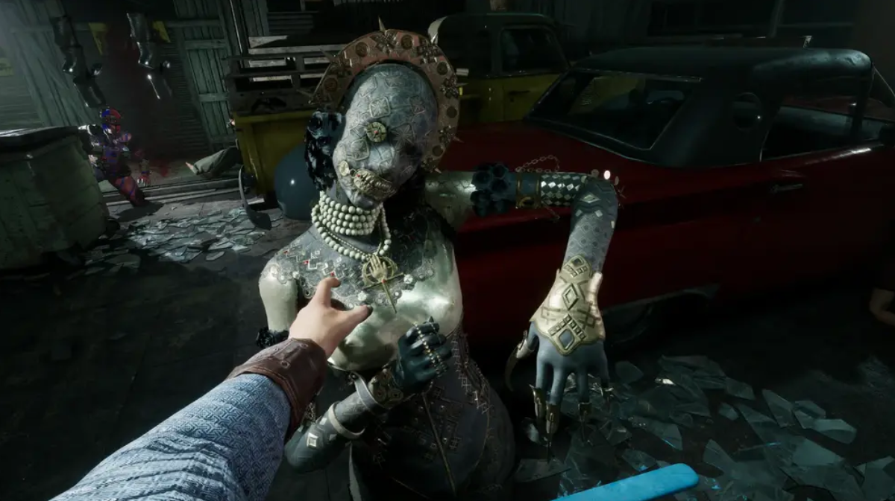
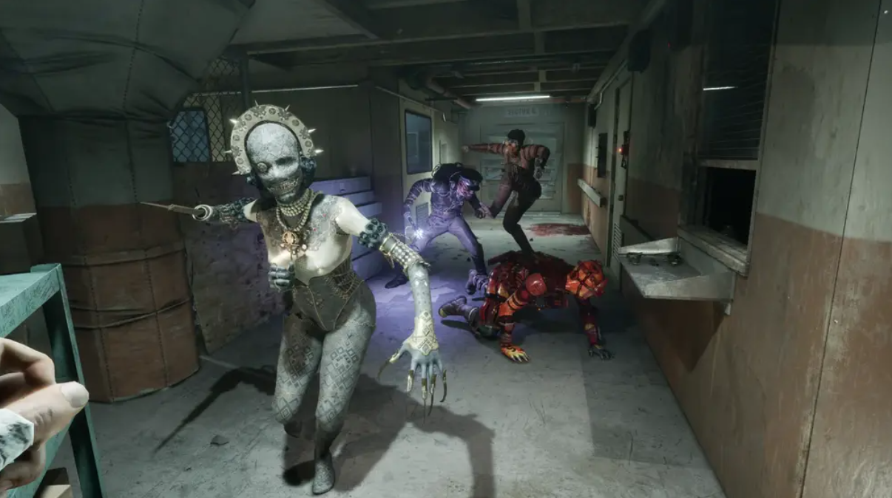

Лилия Богомолова
Главный актив | Экс-поп
Локация: Курорт
Оружие: Лезвие-протез
Лилия Богомолова (ориг. Liliya Bogomolova) — антагонист игры The Outlast Trials, русская мессия, которая якобы разговаривает с Богом, одна из экс-попов и главный актив на объекте Синьяла, в корпорации Мёркофф.
Биография
Лилия родилась в 1928 году в семье беглых помещиков, которые покинули Россию после начала революции 1917 года. После чего семья проживала в Париже во Франции, где мать с самого рождения жестоко относилась к своей дочери. Первые 10 лет своей жизни Лилия провела в ящике, никогда не лицезрев солнечного света.
25 марта 1939 года парижский полицейский проникает в дом и обнаруживает изголодавшуюся дикую девочку Лилию, которую держали в самодельной камере. К тому времени мать уже скончалась при неясных обстоятельствах. Полицейский стал первым человеком, которого увидела Лилия в своей жизни. Пока власти усердно искали ответственных за её состояние, Лилию отправляют в сиротский католический приют Святого Гаспара.
В приюте Лилия довольно быстро научилась разговаривать, заявляя, что с ней начал говорить сам Бог. Когда Лилия научилась говорить, она стала одержимой Библией, но другие девочки начали считать её довольно обаятельной.
Охота на нацистов: Когда началась Вторая мировая война, Господь якобы сказал Лилии, что она русская Жанна д'Арк, и велел ей называться Богомоловой. В 1941 году Лилия пешком отправилась в поход от Парижа до Ленинграда. В Ленинграде она начала беспощадно убивать нацистских солдат, вооружившись одним лишь ножом.
В 1943 году Лилию Богомолову схватывает немецкий офицер. Однако Лилия не собиралась сдаваться и ударила его ножом по лицу. В отместку офицер отрезает ей правую руку, а затем лишает её ещё и языка. Лилия оказалась в длительном плену у нацистов. В городе Генуя её собирались посадить на судно до Аргентины, но перед этим Лилия начала молиться, и произошло чудо — её язык восстановился. После этого Лилия сбегает из нацистского плена и скрывается в лесах Восточной Европы.
The Outlast Trials
Проект «Тенева 2»: Поведение сестры Лилии, отличающееся скрытностью и точностью, несколько отличается от поведения других Первичных Активов, поскольку она не бродит бесконечно по окрестностям в поисках Реагентов. Вместо этого она терпеливо прячется и атакует, если Реагент приближается к ней или поворачивается к ней спиной, оставаясь тихой, если только не преследует кого-то активно.
По сравнению с другими Первичными Активами, у неё есть уникальная способность подчинять Реагентов, заставляя Реагентов отбрасывать её, пытаясь остановить атаку, иначе она их убьёт. Это можно сделать быстрее, если у атакованного Реагента есть кирпич или бутылка в инвентаре, другой Реагент прерывает её атаку или если используется усилитель «Уклонение».
Её агрессивные действия гораздо тише, точнее и осторожнее по сравнению с другими преследующими её Ex-Pop. Как только она теряет цель, она прячется и атакует любого, кто подходит слишком близко или поворачивается к ней спиной. Если её окружают похожие манекены в её тренировочных локациях, её трудно заметить, если она не движется. Это делает практически невозможным отличить её от других манекенов, если только они не увидят, как она естественно оглядывается.
Галерея


